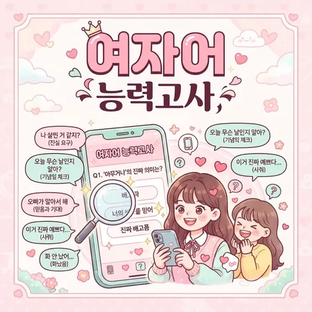

← 전체 테스트 보기
여자어 능력고사
“알겠어^^” 속에 숨은 진심을 맞혀보세요 (8문항·재미용)
1 / 8
결과를 모으고 있습니다...
당신의 결과는
“알겠어^^” 속에 숨은 진심을 맞혀보세요 (8문항·재미용)

결과를 모으고 있습니다...
당신의 결과는
여자어 능력고사는 말뜻 그대로가 아니라 말 속에 숨은 진짜 뜻을 읽어내는 간접 화법 독해 퀴즈입니다. “아니야, 괜찮아”가 정말 괜찮다는 뜻일까요? “맘대로 해”대로 하면 정말 무사할까요? 평소엔 “응응!!”이던 상대가 갑자기 “ㅇㅇ”이라고만 답하면 무슨 일이 생긴 걸까요? 연인과 다투는 장면, 썸 상대와 연락하는 장면, 친구와 메뉴를 고르는 장면, 엄마의 짧은 답장까지 일상에서 한 번쯤 겪어봤을 여덟 장면을 질문으로 담았습니다. 누구의 말버릇을 평가하려는 시험이 아니라, 웃으면서 자신의 해석 습관을 돌아보는 가벼운 놀이에 가깝습니다.
결과는 각 보기에 미리 정해진 유형별 점수를 여덟 문항 동안 모두 더한 뒤, 가장 점수가 높은 유형 하나를 보여주는 방식으로 정해집니다. 행간을 완벽하게 읽는 여자어 네이티브부터 정반대로 읽는 여자어 문외한까지 다섯 단계 가운데 자신의 답과 점수가 가장 많이 겹친 유형이 나옵니다. 잘 보이고 싶은 답보다 평소 자신의 모습에 가까운 보기를 고를수록 결과가 더 재미있어지고, 친구와 답을 바꿔 해보면 전혀 다른 등급이 나오는 것도 이 테스트의 묘미입니다.
여자어 네이티브는 말의 온도와 행간의 공기까지 읽는 경우입니다. 단답이 오면 바로 전화를 걸고, “얘기 좀 해”라는 문자에 사과 멘트를 미리 준비합니다. 주변에서 대화가 잘 통한다는 말을 자주 듣습니다.
눈치 빠른 해석가는 대부분의 숨은 뜻을 척척 알아듣는 경우입니다. 정중한 거절과 진짜 바쁨을 구분하고, 분위기가 식는 순간을 감지합니다. 확신이 없어 한 번 더 묻다가 타이밍을 놓치는 것만 보완하면 네이티브 등급입니다.
노력형 번역가는 반쯤 알아듣고 반은 놓치는 공부 중인 경우입니다. 위험한 말인 줄은 알지만 다음 행동이 매번 헷갈려 친구에게 카톡 캡처를 보내 뜻을 묻는 일이 잦습니다. 성실함만큼은 만점이라 꾸준히 늘고 있습니다.
직진형 돌직구는 말을 곧 뜻으로 받아들이는 경우입니다. “괜찮아”는 괜찮은 것이고 “맘대로 해”는 허락이라고 믿습니다. 악의는 없는데 본인은 억울하고 상대는 답답해하는 패턴이 반복됩니다.
여자어 문외한은 해석이 아니라 정반대로 읽는 경우입니다. “바쁘면 다음에”를 진짜 다음 약속으로 알고 신나하고, “됐어, 됐어”를 쿨한 수락으로 착각합니다. 본인은 늘 당당해서 미워할 수 없는 타입입니다.
연애 중인데 상대의 말이 늘 어렵게 느껴지는 분, 썸 단계에서 답장 한 줄에 일희일비하는 분께 잘 맞습니다. 단톡방에서 눈치 담당을 맡고 있는 분이라면 자신의 등급을 확인해보는 재미가 있고, 친구끼리 모여 각자 해보고 등급을 공개하면 순식간에 연애 토크로 분위기가 달아오릅니다. 다만 낮은 등급이 나왔다고 실제 눈치가 없다고 단정하기보다는, 그날의 웃음거리로 소비하는 편이 좋습니다.
어디에도 저장되지 않습니다. 모든 답변 선택과 점수 합산은 지금 보고 있는 브라우저 안에서만 처리되고, 서버로 전송되거나 기록으로 남지 않습니다. 페이지를 닫거나 새로고침하면 답한 내용은 사라지니 안심하고 솔직하게 답해도 됩니다.
그렇지 않습니다. 등급 이름과 설명은 웃음을 위해 과장해서 쓴 표현입니다. 낮은 등급은 말의 숨은 뜻보다 문자 그대로를 먼저 받아들이는 해석 습관에 가깝습니다. 실제 눈치나 공감 능력을 평가하는 기준이 아니니 가볍게 받아들이세요.
아니요. 여기서 여자어는 간접적으로 돌려 말하는 화법 전반을 가리키는 별명입니다. 성별과 상관없이 누구나 쓰고, 누구나 당하는 말버릇을 소재로 삼았습니다. 특정 성별을 놀리거나 규정하려는 의도는 전혀 없습니다.
바뀔 수 있습니다. 여덟 문항의 보기에 붙은 유형 점수를 합쳐 가장 높은 유형을 보여주기 때문입니다. 그날 기분에 따라 다른 보기를 고르면 합계가 달라져 다른 등급이 나옵니다. 답을 바꿔가며 비교해보는 것도 재미있습니다.
결과 화면 아래에 있는 링크 복사하기 버튼을 누르면 이 테스트 주소가 복사됩니다. 친구에게 주소를 보내면 같은 테스트를 바로 해볼 수 있습니다. 휴대전화에서는 공유하기 버튼을 눌러 대화방으로 바로 보낼 수도 있습니다.
| 유형 | 특징 |
|---|---|
| 🏆 여자어 네이티브 | 행간이 아니라 공기까지 읽는 당신입니다. |
| 🔍 눈치 빠른 해석가 | 대부분의 여자어는 척척 알아듣는 눈치백단형입니다. |
| 📖 노력형 번역가 | 들을 때는 반쯤 알아듣고 반은 놓치는, 열심히 공부 중인 번역가입니다. |
| 🪨 직진형 돌직구 | 말은 곧 뜻이라고 믿는 팩트주의자입니다. |
| 🌫️ 여자어 문외한 | 해석이 아니라 정반대로 읽는 오역의 달인입니다. |
근본적인 연애 스타일은 연애 유형 테스트에서, 마음을 움직이는 말솜씨는 플러팅 능력 테스트에서 확인해보세요. 친구 관계에서의 나는 친구 관계 유형 테스트가 알려드립니다.
상대 마음을 읽는 대화법이 궁금하면 플러팅 대화 팁 모음도 함께 읽어보세요.
모든 결과는 재미와 오락을 위한 참고용 해석입니다.